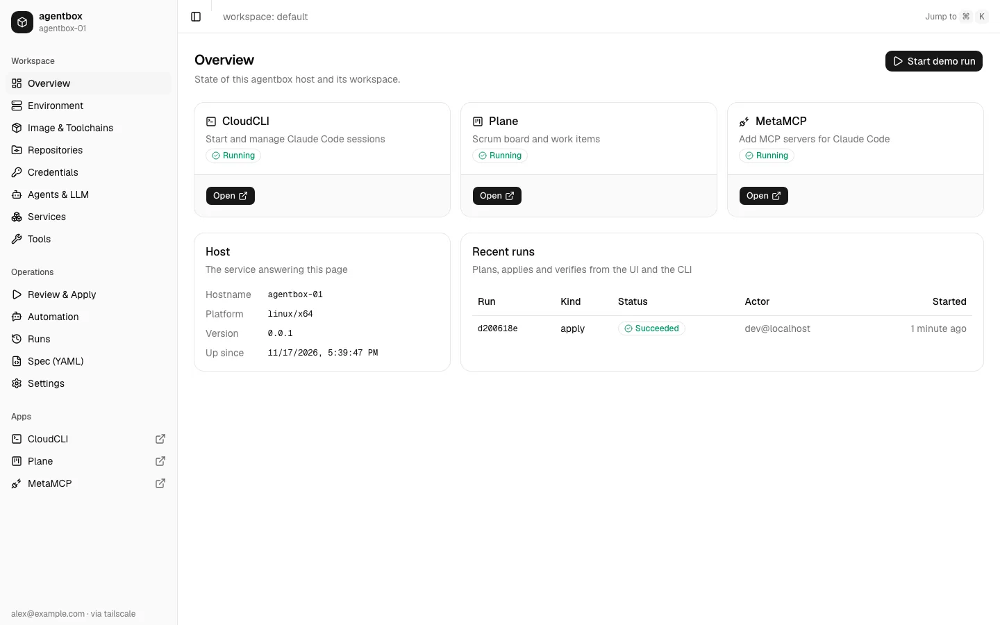
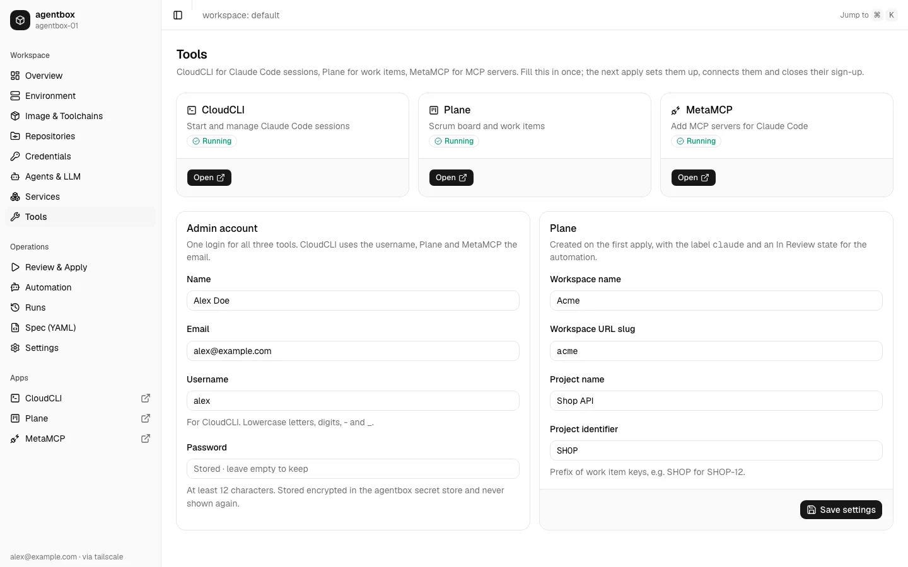
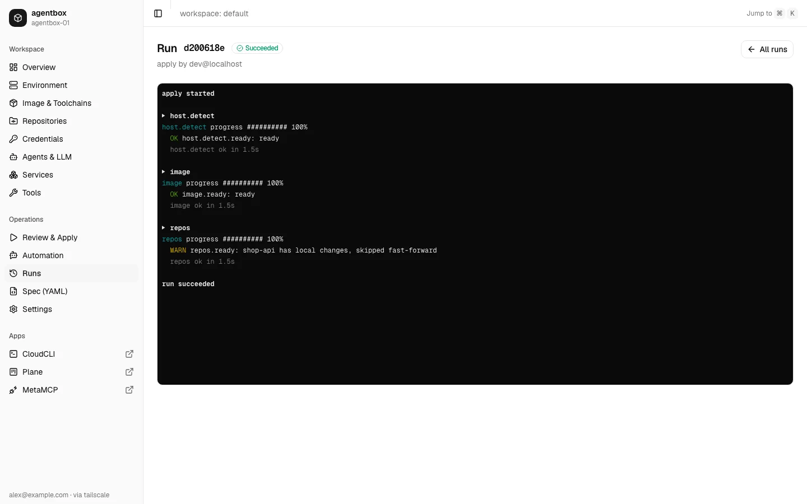
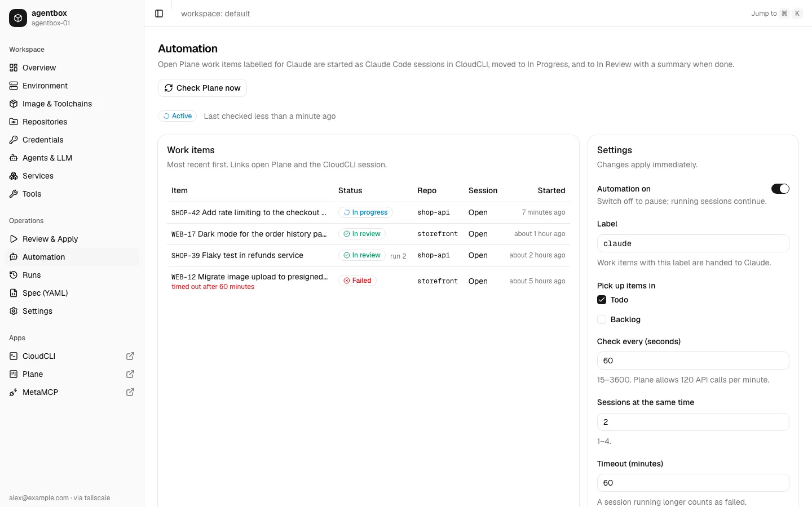
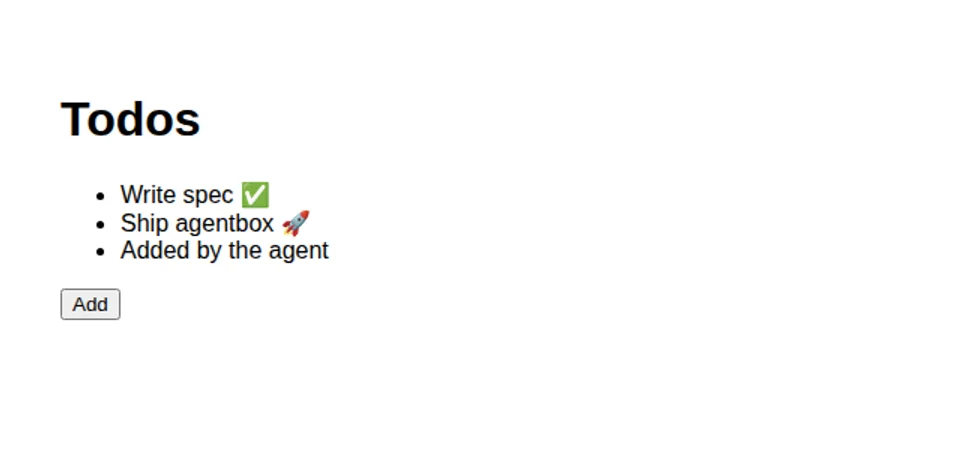

A coding-agent workspace on one VM. Configured, connected, private.
agentbox turns an empty Ubuntu VM into a workspace for coding agents: Claude Code in the browser, MCP servers managed in one place, work items in a real board, and an automation that hands tasks labelled claude to Claude and moves them to review. One binary, one spec, reachable only through your tailnet.

Start and manage Claude Code sessions in the browser.
Scrum board and work items, preconfigured for agents.
Add MCP servers once; Claude Code sees them through one token.
Labelled items go from Todo to In Review on their own.
Agents are easy to start. A place for them to work is not.
Every new project means the same hour of setup: toolchains, credentials, MCP configs for each agent, a board nobody connects to the sessions. agentbox does that part once, declaratively, on a VM that is the security boundary.
Hand-built workspaces
Node, Java, Flutter, Python, agent CLIs, SSH keys, git config. Done by hand, drifting by next week, impossible to copy to the next VM.
MCP config everywhere
Every agent has its own config format and every MCP server its own token. Adding one tool means editing several files on several machines.
Tasks and sessions apart
The board says "to do", the agent session lives in a terminal somewhere. Nobody moves the ticket, nobody links the session.
agentbox apply builds the image, starts the tools, creates their admin accounts, connects them and verifies every step.
Three steps from an empty VM to agents working on tickets.
Everything below runs on a VM you own, behind Tailscale. Nothing is exposed to the internet.
- 1
Bootstrap the VM
sudo agentbox bootstrapinstalls Docker, a firewall with only SSH open, Tailscale and the agentbox service. - 2
Fill in one page
Admin account, Plane workspace and project, repositories. The password goes straight into an encrypted secret store.
- 3
Apply
CloudCLI, Plane and MetaMCP start, get their admin, close sign-up, connect to each other and appear as one-click links.


Label a ticket claude. Review the result.
A small process inside agentbox polls Plane, starts a Claude Code session in CloudCLI for each open labelled item, and keeps the ticket honest: status, live session link, and Claude's summary as comments.
An open item carries the label claude. Plane CE can't filter by label server-side, so agentbox filters client-side.
agentbox claims it, comments, and starts a session on its own branch, with tests and browser checks in the prompt.
The CloudCLI session is linked on the ticket as soon as it exists. Watch live or take over in the browser.
Claude's summary lands as a comment. Move it back to Todo with feedback and the same session continues.
- Bounded. Parallel sessions, poll interval and timeout are settings; failures get a comment, go back to Todo and get
claude-failedinstead of retrying forever. - Two-way. Through the Plane MCP in MetaMCP, Claude can read and comment on items while it works. Status changes stay with the automation.
- Visible. The Automation page lists every item with links to Plane and to the session, and a switch to pause.

Small, specialised tools, wired together for you.
After evaluating OpenHands and Paperclip, agentbox settled on plain Claude Code sessions plus three focused tools. agentbox owns the glue: images, compose, secrets, bootstrap, links.
CloudCLI
Claude Code sessions in the browser, inside the workspace container with your toolchains. Its API starts sessions for the automation.
1.37.4 · :8443MetaMCP
One namespace, one endpoint, one token for Claude Code. Add MCP servers in its UI; Plane is preinstalled.
2.4.22 · :8445Plane
Community Edition from the pinned release compose. Workspace, project, label and an In Review state are created for you.
v1.4.2 · :8444Browser for agents
Headless Chromium and Playwright MCP in the same container, so agents open their own dev server and look at screenshots before saying "done".
Chromium 155One binary
Bun compiles daemon, CLI and the embedded Next.js UI into a single file for linux-x64 and linux-arm64.
Declarative spec
Toolchains via mise, repos, credentials by reference, services. Plan before apply, idempotent providers, verify after.
Live logs
Every apply streams over SSE from SQLite. Reload the page or lose the connection: the log resumes without a gap.
Sealed secrets
An age-encrypted store, locked on start. Plaintext only in memory and on tmpfs, redacted from every log.

Verified end to end
$ bun run --cwd e2e browser
▶ agentbox verify: browser-check.mjs
OK browser.launch: Chromium 155 started
OK browser.fonts: CJK 32 px, emoji 20 px
▶ MCP, like Claude Code
OK navigate to http://localhost:3000
OK click updates the page
OK console errors are visible to the agent
OK screenshot returned to the model as image/pngRuns on Ubuntu 24.04 for linux/arm64 and linux/amd64, and in CI on every push.
The VM is the boundary. Your tailnet is the only way in.
agentbox runs on the host and owns Docker. Every web UI is served by tailscale serve on its own HTTPS port; the firewall keeps only SSH open.
agentbox apply -f workspace.yamlDeclarative engine. Every capability is a provider with detect, plan, apply and verify, run as a DAG with a plan hash and abort.
Static UI. Next.js runs only at build time; Hono serves the export from the binary and the oRPC API next to it.
Multi-workspace ready. Paths, compose projects, networks and state are named per workspace from day one.
Agents get a sandboxed VM, not your laptop or production.
The VM holds no production credentials. Inside it, agentbox adds defence in depth without pretending containers are a sandbox.
Tailnet only
No Funnel, no public ports besides SSH. Docker binds published ports to loopback by default.
Identity, not passwords
Tailscale identity headers are trusted only on a Unix socket only tailscaled can reach. SSH tunnels use one-time links.
Sign-up closed first
Every tool gets its admin before it is served, and registration is closed right after. No first-visitor-becomes-admin window.
Secrets by reference
Specs hold references only. Values live in an age store, reach containers via tmpfs and never appear in logs or API responses.
No Docker socket
None of the tool containers gets the Docker socket or host networking. agentbox alone owns Docker.
Pinned and checked
Tool versions and base images pinned; contract tests against the pinned versions catch breaking upstream releases.
Honest status: the foundation runs, the tool stack is coded, not yet proven.
agentbox is built in phases with checkable exit criteria. Here is where each one stands.
Monorepo, CI, single binary with the embedded UI for macOS and Linux, oRPC API with resumable live logs, SQLite, age secret store, login links and Tailscale socket auth, shadcn/ui design system. Storybook and the Tailscale spike on a real VM are still open.
Mostly doneSpec, provider engine, host bootstrap (Docker, ufw, Tailscale, systemd), image with mise toolchains and Claude Code, credentials, repos. The browser capability for agents is built and tested end to end.
In progressCloudCLI, MetaMCP, Plane and the Plane → CloudCLI automation: renderers, bootstrap clients, settings pages and app links exist. Next: run them against the real images and add the automation's unit tests.
Coded, untestedAndroid emulator with KVM or Redroid, merge requests from sessions, aborting sessions from the UI.
PlannedSeveral workspaces per VM, spec export and import, devcontainer.json importer, snapshot and restore.
PlannedHow we got here, one decision record at a time.
The agent surface changed twice: from OpenHands to Paperclip to the current tool stack. Each step is written down with its reasons.
Everything so far, in one place.
The implementation plan is the full design (in German): architecture, stack and library choices, spec, providers, security checklist, test strategy and phases.
Read
Run it locally
$ git clone https://github.com/MaxGierlachowski/agentbox
$ cd agentbox && bun install
$ bun run dev # UI on http://localhost:3100
# single binary with the embedded UI
$ bun run --cwd apps/agentbox compile \
--target linux-x64 --target linux-arm64Needs Bun 1.4.2 or later. The tool stack and the end-to-end checks need Docker.
Questions, answered.
Can I use agentbox today?
Not as a product yet. The daemon, the UI, the binary build and the browser capability work and are tested. The provider engine and the apply that sets up the tools on a VM are the next milestone (v0.1). Follow the repository if you want to see it land.
Why not OpenHands or Paperclip?
Both were evaluated. OpenHands was not good enough for this use, and Paperclip loaded the agents with too much context. Plain Claude Code sessions in CloudCLI, MCP servers in MetaMCP and tasks in Plane turned out simpler and stronger. ADRs 0005 to 0007 have the details.
Why is nothing public?
The tools can run agents, and agents can run code. Keeping every UI inside your tailnet removes a whole class of attacks; Tailscale also gives HTTPS and identity for free.
Which agents does it support?
Claude Code is the focus, through CloudCLI and the automation. Codex and Gemini CLI are part of the plan for the workspace image; MCP configuration is rendered once and shared.
What does it run on?
An Ubuntu 24.04 VM with Docker, x64 or arm64. With Plane included, plan for at least 8 GB of RAM; 16 GB is comfortable.
What is the license?
MIT. The bundled tools keep their own licenses (CloudCLI is AGPL-3.0; Plane and MetaMCP have theirs); agentbox runs them as separate containers.
Give your agents a place to work.
One VM, one spec, one binary. Built in the open, decision by decision.